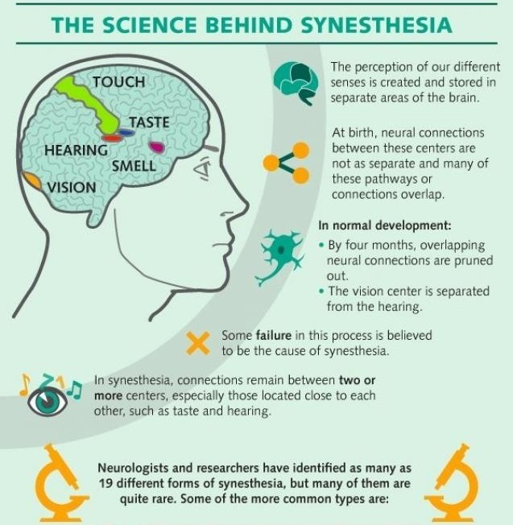
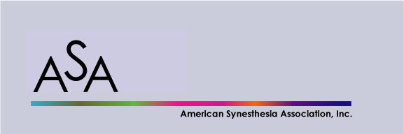

What Is Synesthesia?
Synesthesia is when you hear music, but you see shapes. Or you hear a word or a name and instantly see a color. Synesthesia is a fancy name for when you experience one of your senses through another. For example, you might hear the name "Alex" and see green. Or you might read the word "street" and taste citrus fruit.
The word "synesthesia" has Greek roots. It translates to “perceive together.” People who have this ability are called synesthetes. Synesthesia isn’t a disease or disorder. It won’t harm your health, and it doesn’t mean you’re mentally ill. Some studies suggest people who have it may do better on memory and intelligence tests than those who don’t. And while it may seem easy to make up, there’s proof that it’s a real condition.
One of the most common responses is to see letters, numbers, or sounds as colors. You might also:
• See or hear a word and taste food
• See a shape and taste food
• Hear sounds and see shapes or patterns
• Hear sounds after you smell a certain scent
• Hear sounds and taste food
• Feel an object with your hands and hear a sound
• Feel a touch when seeing someone else being touched. (This is called mirror touch.)
Synesthesia Symptoms
You can’t control it. The response happens right away. You can’t help it. This is true even with new experiences. For example, if you hear a new piece of music, you may see a color or taste a flavor without any effort. It just happens.
It’s internal, mostly. The colors are just in your mind. Only a few synesthetes see colors outside their body.
It stays the same over time. If you see the letter "A" in green today, you’ll see it in green 10 years from now. One study asked people with synesthesia to look at 100 words and say the color they saw for each. A year later, researchers gave the participants the test again without telling them ahead of time. The answers matched more than 90% of the time. Answers from people without synesthesia taken just 2 weeks after the first test matched only 20% of the time.
It often starts in childhood. Studies of kids with synesthesia found that it develops over time. The color and letter associations may be random at first and become more fixed as you grow.
Who Gets Synesthesia?
It seems to affect women more than men, but some researchers say this isn’t true. They say women are just more willing to discuss the condition. Left-handed people may be more likely to have synesthesia than righties. Also, researchers suggest some synesthetes are artistic and often have hobbies like painting, music, or writing.
If you have this condition:
• Your perceptions are involuntary. When you hear music and see shapes or see a color when you hear a word, you don’t think about it. It just happens.
• You may be able to describe your sensations to others.
• The crossovers between senses are predictable. For example, you may always see green when you hear the name “Alex.”
About 1% to 4% of people are thought to have it. We don’t know for sure because:
• You may not realize you have it.
• You think that everyone senses the same way as you do.
The number of people who come forward may go up because more people are talking about synesthesia.
Synesthesia Causes?
In the words of synesthete Lady Gaga, “You were born this way, baby!”
That’s right: most people with synesthesia are born with it or develop it very early in their life. It can also run in families. Billie Eilish’s brother FINNEAS also has it and uses it to write his music.
An earlier study suggested that it’s possible to develop it later in life too, although it’s incredibly rare. So if you’re an adult and you start seeing colors when you hear music? You might just be a unicorn.
And yes, before you ask, some illicit substances can cause a temporary, synesthesia-lite sensation for some people.
Psychedelic drugs such as LSD, mescaline, and psilocybin are the obvious suspects, but cannabis, alcohol, and even caffeine can give some people a temporary window into certain aspects of a synesthete’s world.
However, it can be difficult to appreciate these feelings of synesthesia when they’re artificially induced due to the physical, cognitive, and behaviorally adverse effects of some substances.
Types of Synesthesia
There’s lots of different types, and you can live with more than one of them. These include:
Grapheme-color synesthesia. When you “see” specific colors in your mind in association with numbers or letters.
Chromesthesia. Associating sounds with colors. These can be musical notes, or even just everyday noises such as a door shutting.
Number form. When you have a mental map of numbers, with each one having a specific place (such as on a line).
Mirror touch. When you see someone touching their leg and feel a touch on your own leg.
Lexical-gustatory. When certain words evoke a sensation of taste. (So if you hear the word “city,” you might taste strawberries.)
And that’s not the full list! An earlier study identified over 70 types of synesthesia, with grapheme-color being the most common. You may also be able to taste shapes, or even see specific colors when you think about something that makes you emotional.
Most people have some experiences of synesthesia in association with very specific stimuli, but someone who is synesthetic experiences this more commonly — to a degree that makes it a trait.
Famous People With Synesthesia
Did you know that a higher than average number of synesthetes (people with synesthesia) are artists?
It doesn’t just apply to visual artists such as Vincent van Gogh and Wassily Kandinsky. There’s a high number of very popular musicians who have synesthesia.
If there was a synesthesia-only music festival, you certainly wouldn’t be disappointed. Famous synesthetes include:
• Billie Eilish
• Lady Gaga
• Kanye West
• Pharrell Williams
• Duke Ellington
• Lorde
It’s common for musicians to use their synesthesia as a composition tool. Lorde matches the notes to correspond with the colors she sees for each song, while Billie Eilish associates a color, texture, day of the week, and number with every song she writes.
There’s no research yet explaining what Kanye was thinking when he recorded the “poopedy scoop” part of “Lift Yourself.”
Letter/color synesthesia
Sean Day did research on synesthetically colored letters, which he reported here. What he found was that although there were a few letters where there was a larger group favoring a particular color, this was the exception rather than the rule, and most letters had a fairly even distribution of colors.

In this chart, I've arranged the colors by similarity so that it's easier to see the patterns — or, perhaps more accurately, absence of patterns. For just about every letter, nearly the entire spectrum of colors is represented.
There are some exceptions, though. The letters I, O and X (and also the numerals 0 and 1) were categorized by a majority of synesthetes as uncolored (n/c), white, grey, or black — that is, as colorless. The only letter (or numeral) where there's a striking agreement is the letter A, which (as in Day's study), nearly half the subjects associated with red. Red is the first color that infants can perceive and A is often the first letter that children are taught, which suggests that this correspondence is learned rather than innate.
Fun links
American Synesthesia Association: http://synesthesia.info 
International Association of Synaesthetes, Artists, and Scientists: https://iasasevents.com/home/

Synesthesia: http://www.daysyn.com/

Synesthesia test: https://synesthete.org/home/